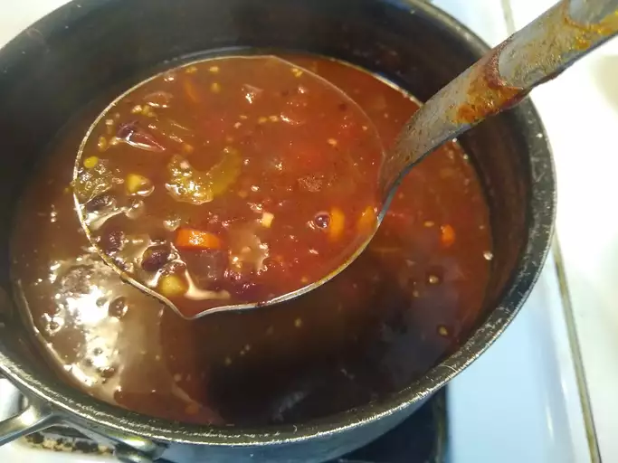

Back to all recipes
Black Bean Soup

Image source is https://www.allrecipes.com/recipe/25333/vegan-black-bean-soup/, Photo by Shnitzel
Description
Black bean soup is delicious and nutritious! Beans have lots of protein, fiber and calories, so they are a very efficient meal.
Ingredients
- 1 tablespoon olive oil
- 1 large onion, chopped
- 2 carrots, chopped
- 1 stalk celery, chopped
- 4 cloves garlic, chopped
- 2 tablespoons chili powder
- 1 tablespoon ground cumin
- 1 pinch black pepper
- 4 cups vegetable broth
- 4 (15 ounce) cans black beans, undrained, divided
- 1 (15 ounce) can whole kernel corn
- 1 (14.5 ounce) can crushed tomatoes
Steps:
- Heat olive oil in a large pot over medium-high heat. Sauté onion, carrots, celery, and garlic in hot oil for 5 minutes. Season with chili powder, cumin, and black pepper; cook for 1 minute. Stir in vegetable broth, 2 cans beans, and corn. Bring to a boil.
- Meanwhile, process remaining 2 cans beans and tomatoes in a food processor or blender until smooth. Stir into boiling soup, reduce heat to medium, and simmer for 15 minutes.